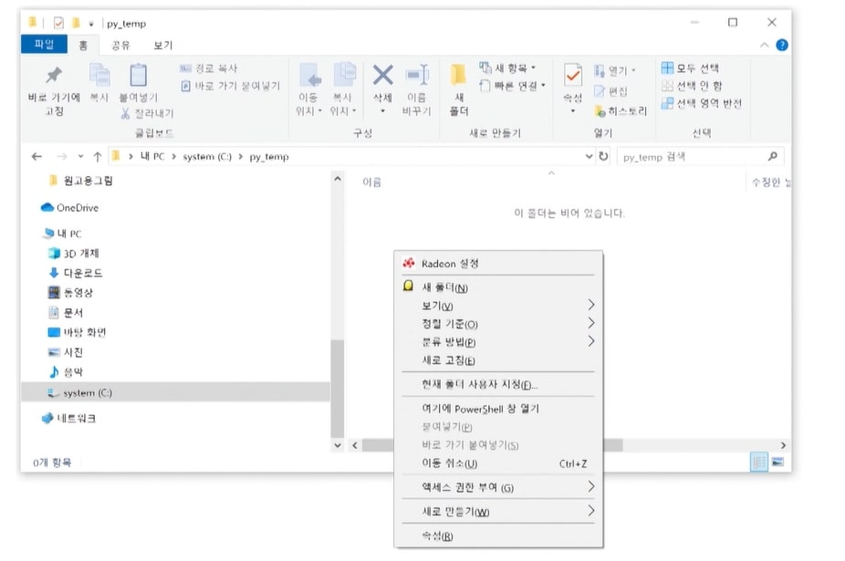
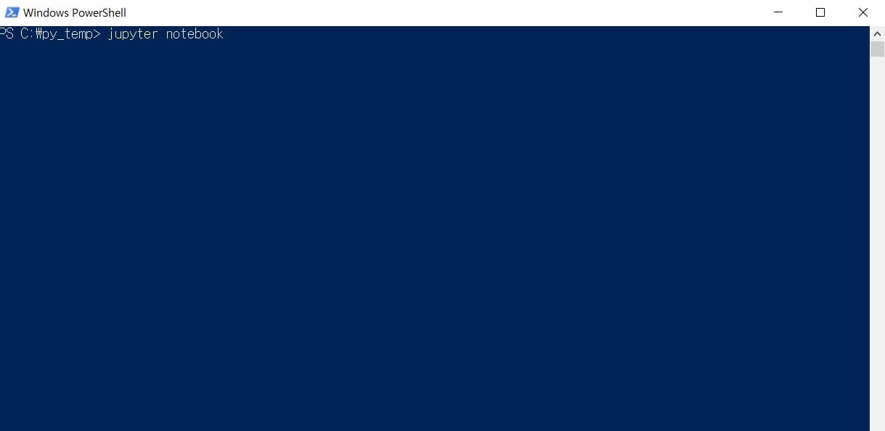
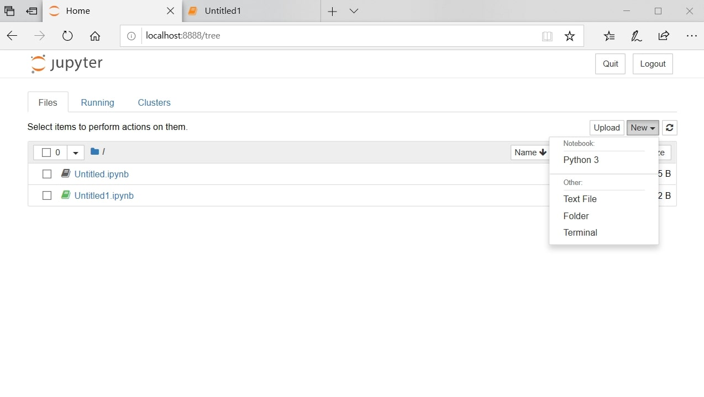
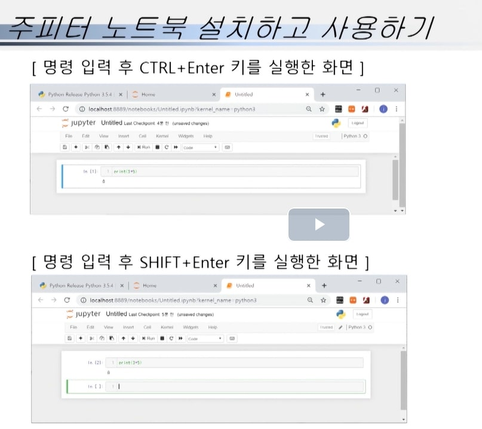
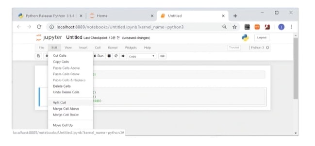
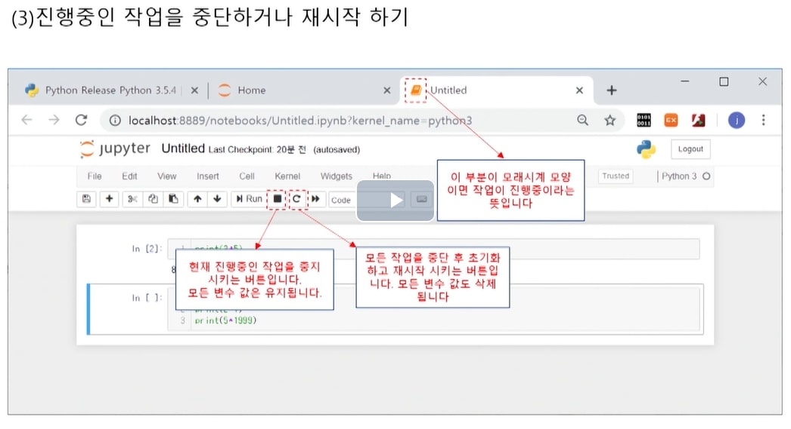
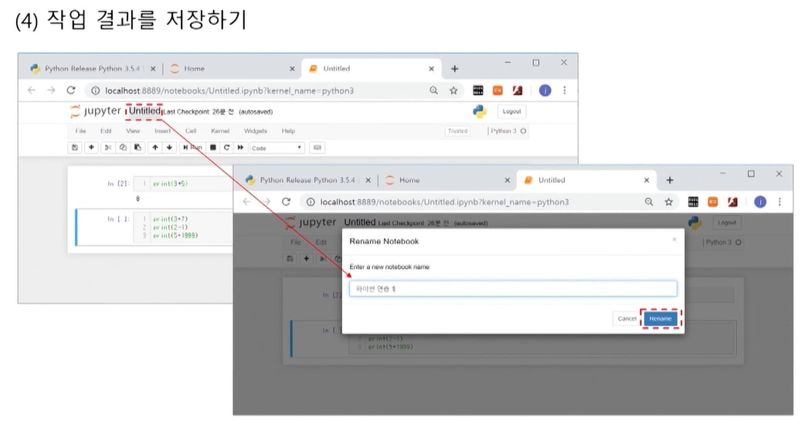

주피터 노트북 열기
파일 내의 빈공간에서 shift를 누른 상태에서 오른쪽 마우스 클릭

여기에 powershell 창 열기 선택

jupyter notebook을 입력
위 파란창을 닫으면 jupyter에 작성할 수 없으니 창을 닫지 않고 작업

python3를 선택

ctrl+enter는 결과만 출력하고 shift+enter는 결과 출력 및 다음 명령칸을 생성
따라서 주로 코딩할때는 shift+enter를 사용함

프로그램을 실행하였을때 셀단위로 작동하므로 셀을 나눠놓을 수록 오류가 난
부분을 빨리 찾을 수 있다.

주로 무한루프에 빠졌을때 시스템을 정지시킨다.
